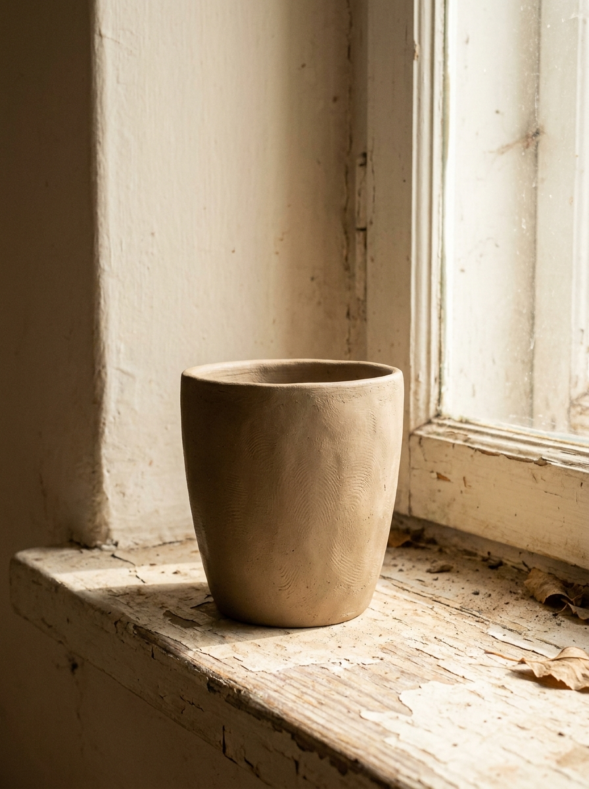
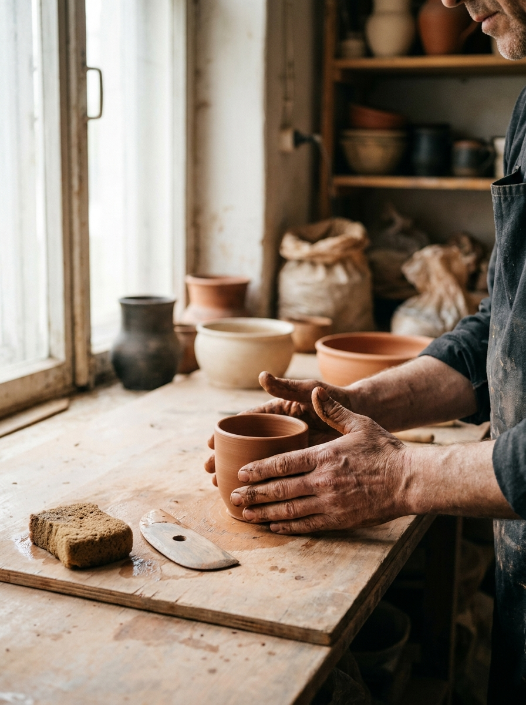
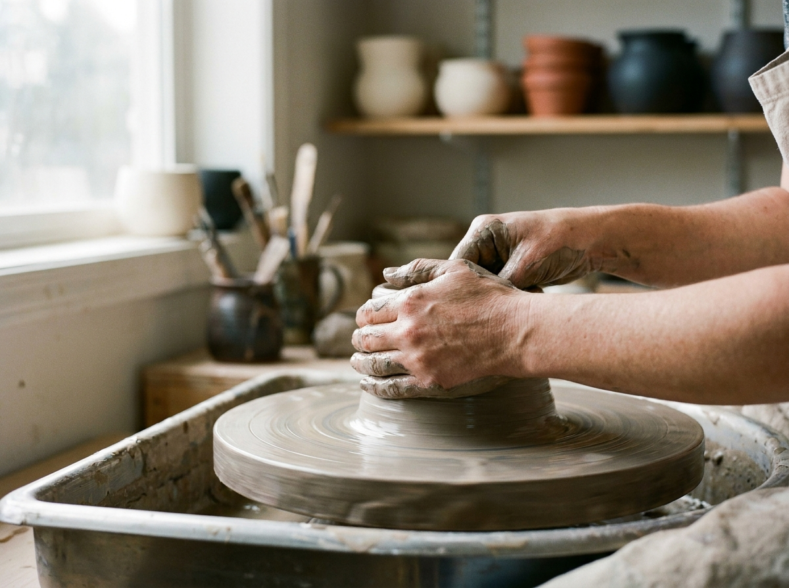
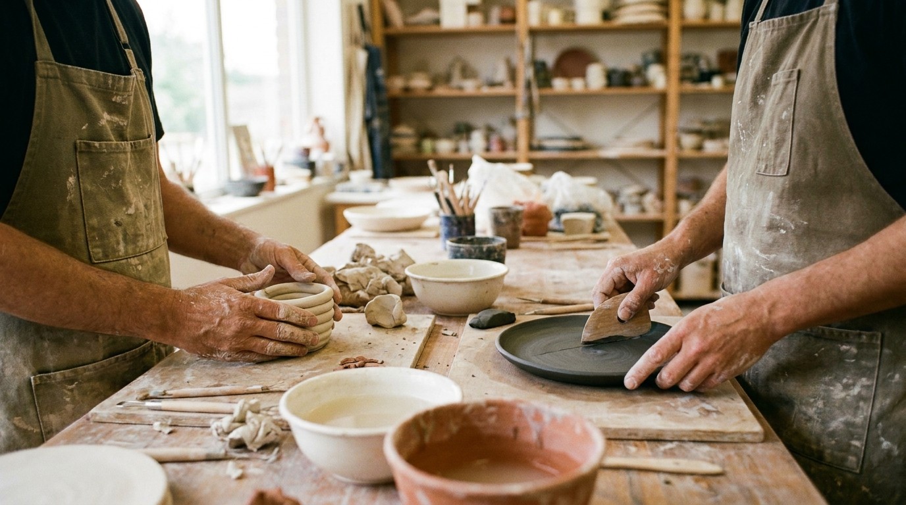
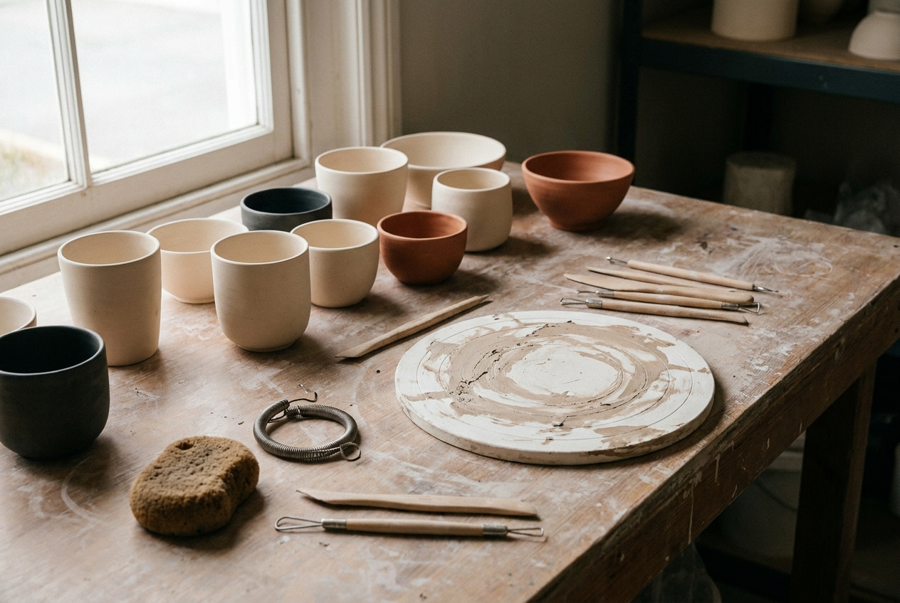
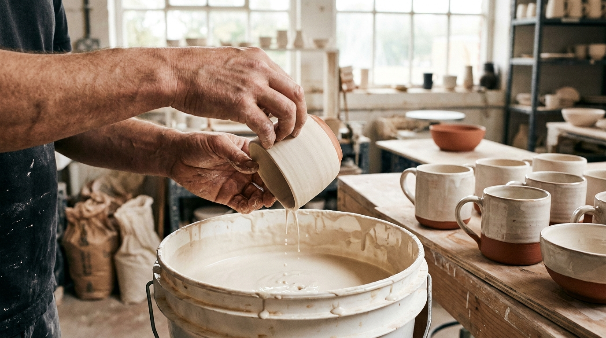
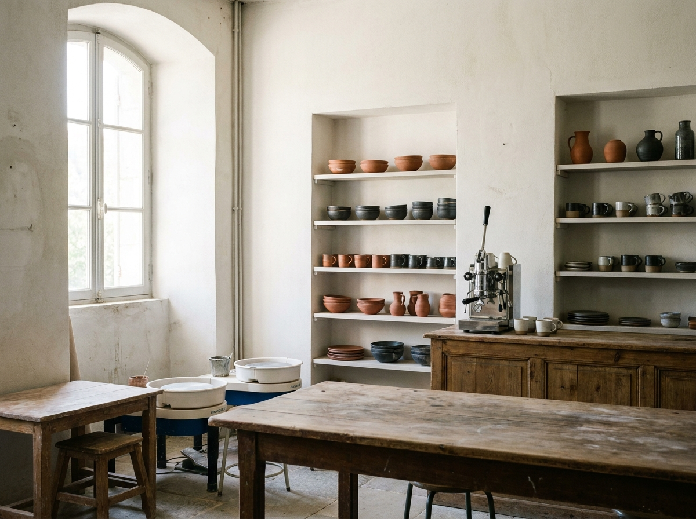

Перша чашка
Класика студії. Технікою щипкового ліплення ви зробите чашку, з якої справді питимете каву. Покажемо, як тримати форму, вирівняти вінця — і де доречно лишити слід пальця.
890 ₴ / особа
Керамічна майстерня та повільна кава — Чернівці
Приходьте зліпити чашку чи тарілку, випийте кави без поспіху — а за два‑три тижні повертайтеся по готову випалену річ. Досвід не потрібен.

01 / Майстерні

Класика студії. Технікою щипкового ліплення ви зробите чашку, з якої справді питимете каву. Покажемо, як тримати форму, вирівняти вінця — і де доречно лишити слід пальця.
890 ₴ / особа

Дві години за колом під керівництвом майстра: центрування, перший циліндр і ваша перша піала. Коло не пробачає поспіху — саме тому це найкращий спосіб уповільнитися.
1100 ₴ / особа

Формат для пар, друзів і тих, хто давно не бачився. Ви робите дві речі — наприклад, тарілку й чашку — і за три тижні забираєте їх як спільний комплект.
1650 ₴ / за двох

Для тих, хто вже ліпив або сидів за колом. Три години самостійної роботи: місце, глина, поливи та піч у вашому розпорядженні. Майстер поруч, але не веде заняття.
450 ₴ / особа
За цим фільтром зараз нічого немає.
Спробуйте інший формат — або напишіть нам, і ми підкажемо, з чого почати.
02 / Процес
Від грудки глини до чашки на вашій полиці минає приблизно три тижні. Більшу частину цього часу працюємо ми — ви приходите двічі.

У розкладі є формати для новачків, пар і людей з досвідом. Бронюєте дату й час онлайн — або просто пишете нам в Instagram.
Дві-три години за столом чи колом. Майстер підказує рівно стільки, скільки потрібно, щоб річ вийшла вашою, а не його.
Виріб сохне кілька днів, проходить перший випал, вкривається поливою і випалюється вдруге — уже при 1200 °C.
Орієнтовно через 14–21 день пишемо, що річ можна забрати. Заодно це гарний привід зайти на каву.
03 / Розклад
04 / Простір
HLYNA — маленька незалежна студія на першому поверсі старого будинку в центрі Чернівців. Нас четверо: двоє керамістів, бариста і піч на 1200 градусів. Ми не мережа і не франшиза — усе, що стоїть на полицях, зроблене тут, руками наших гостей або нашими.
Кав'ярня з'явилася майже випадково: чашки з першого випалу треба було з чогось пити. Тепер повільна кава — половина характеру цього місця. Сюди приходять ліпити, працювати, чекати свій випал і знайомитися: більшість наших майстрів колись самі прийшли сюди гостями.
«Найкращий момент — коли людина забирає свою першу чашку й питає: „Це що, справді зробила я?" Заради цього все й починалося.»

05 / Галерея
06 / Кава
Коротке меню без поспіху: кілька позицій кави, трав'яний чай і два десерти від пекарні з сусіднього кварталу. Каву подаємо в чашках, зроблених тут.
07 / FAQ
Не знайшли відповідь? Напишіть нам в Instagram або подзвоніть: +38 068 512 04 37.
Так. «Перша чашка», «Гончарне коло» та «Ліплення для двох» розраховані саме на людей, які ніколи не торкалися глини. Майстер показує кожен крок, а «зіпсувати» глину неможливо — її завжди можна зім'яти й почати знову.
Орієнтовно через 14–21 день після заняття: виріб має висохнути, пройти перший випал, вкритися поливою і випалитися вдруге. Коли річ готова, ми пишемо в Instagram або телефонуємо. Зберігаємо роботи до трьох місяців.
Так. У ціну кожної майстерні вже входять глина, обидва випали, базові поливи та інструменти. Доплатити доведеться хіба за додатковий виріб понад програму — 150 ₴ за випал кожної зайвої речі.
Дітям від 8 років буде комфортно у форматі «Ліплення для двох» разом із дорослим. Окремих дитячих груп поки не ведемо: у майстерні гарячі печі й обмежена кількість місць, тому дитина працює поруч із вами.
Попередьте нас щонайменше за 24 години — і ми безкоштовно перенесемо запис на будь-яку іншу дату з розкладу. Якщо попередити пізніше, разово перенесемо і так, але вдруге вже попросимо забронювати заново.
Так, це один із найчастіших сценаріїв. Забронюйте будь-який формат і напишіть у коментарі «подарунок» — ми підготуємо паперовий сертифікат, який можна забрати в студії або отримати фото для листівки. Сертифікат діє три місяці.
08 / Контакти
вул. Ольги Кобилянської, 19
Чернівці, 58000
Перший поверх, вхід із двору. Орієнтир — синя дерев'яна брама з керамічною табличкою.
| Пн | вихідний — день випалу |
|---|---|
| Вт–Пт | 10:00–20:00 |
| Сб–Нд | 11:00–19:00 |
Це демонстраційний сайт для портфоліо. Жодні дані нікуди не надсилаються і не потрапляють на сервер — серверної частини тут просто немає.
Коли ви оформлюєте демо-бронювання, введені ім'я, телефон і коментар зберігаються лише у localStorage вашого браузера, щоб працював розділ «Мій запис». Вони зникнуть, якщо скасувати запис або очистити дані сайту в налаштуваннях браузера.
Сайт не використовує cookie, аналітику чи сторонні трекери.